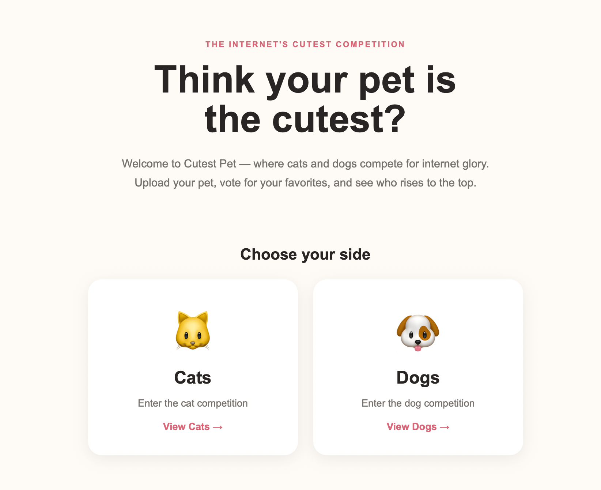

INDEPENDENT WORK
Things I'm building
and exploring on my own.
→ Independent projects combining data, AI, experimentation, and web development.
01 · DATA + WEB PROJECT
IN DEVELOPMENT
The Golden Ratio & Modeling
Can a mathematical proportion help explain success in fashion modeling?

An interactive data science project testing whether facial proportions associated with the golden ratio have any meaningful relationship with professional modeling success.
Explore Project →
02 · WEB PROJECT
IN DEVELOPMENT
Cutest Pet
Think your pet is the cutest?

A community-driven web app where users upload their pets, vote for their favorites, and compete for a place at the top of the leaderboard.
Explore Project →Note: Both projects currently run locally during development. Public project links will be added once they're deployed.